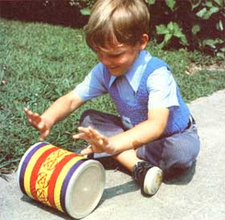
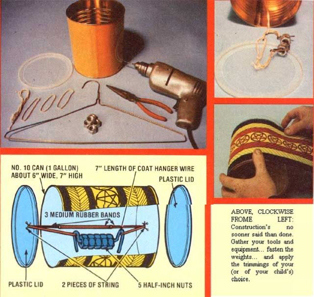

Here's an easy-to-make toy that one of MOTHER'S staffers assembled in his spare time... and which you can put together in a jiffy for the "wee ones" on your Christmas list.
You won't need to gather a mountain of material to whip up this little plaything, either... just a fairly large metal can with two plastic lids (we used a No. 10 food container with a diameter of six inches and a height of seven inches, but a two-pound coffee can or a shortening tin will do fine), a wire coat hanger, three stout rubber bands, five large machine nuts (or any other suitable weight with a hole in its center, such as an "egg" fishing sinker or a short section of pipe), and a foot or so of heavy cord. You'll also need a pair of pliers with a cutting edge and a drill with a small bit (in a pinch, you can substitute a hammer and a thin nail for the drill).
Decorate your magic can as you see fit (better yet, let the li'l tyke try his or her hand at it) by drawing designs on a piece of heavy paper you've carefully cut to fit around the outside of the container and gluing it in place. Or simply paint right over the existing label with watercolors.
Now you're ready to make the magic. First, cut yourself a seven-inch length of coat hanger wire, slip the nuts over it, and center 'em. Then bend the wire (to an angle of 90°) on each side of the weights to keep 'em from sliding. While you're at it, form two 180-degree loops- about an inch and a half from the right-angle bends-in each end of the wire. These hooks will serve to hold the rubber bands in place. (Of course you'll tie the elastic hoops together-one end through the other, so all three are connected in a line-before you slip the ends into their respective loops of wire.)
Now take your drill (or your hammer and nail) and make two holes-about a quarter of an inch apart-in the center of the metal bottom of the can. Then punch two identically spaced bores in the middle of one of the plastic lids. Next cut your length of cord in half, slip one piece around one end of the rubber band "motor" (make sure that the weight is centered, with equal amounts of rubber band on each side of it), and tie the string through the holes in the metal end of the can. Finally, take the other bit of cord and fasten the remaining end of the gum-band "motor" to the plastic lid... and you're in business.
Secure the tied plastic cap over the open end of the can, slip the other lid onto the closed end (to assure that the toy will roll in a straight line), and push the gadget away from you on any level surface. It'll go only so far, and then come right back again every time... thanks to the action of the "wound up" rubber band. Now this "boomerang" effect might not seem to be much to us grown-ups, but little ones will think it's big news... and the can's monkey shines are sure to keep 'em giggling with every shove.
|
 This little feller's all grins as he prepares for an instant comeback. |
 |
|